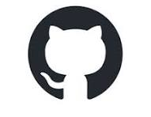

📧geetasrichitturi@gmail.com 📞+91 9346528713 📍West Godavri, Andhra Pradesh
LinkedIn GitHub HackerRank
📧geetasrichitturi@gmail.com 📞+91 9346528713 📍West Godavri, Andhra Pradesh
Aspiring Python Full Stack Trainee with foundational skills in both Front-End and Back-End Technologies. Skilled in Python, HTML, Flask, JavaScript and Database management, like MySQL with Hands-on Experience using development tools like Python IDLE and VS Code. Quick learner with strong abilities, problem-solving skills and easy to grow in the Python Full Stack Develop
EDUCATIONBachelor of Technology,Swarnandhra Institute of Engineering and Tehnology
2021 – 2025 Naspuram, India
Intermediate, Aditya Junior College
2019 – 2021 Palakollu, India
SSC, Sri Chaithanya Techno School
2018 – 2019 Palakollu, India
PROFESSIONAL EXPERIENCE
Python Full Stack Trainee at Codegnan IT Solutions.
11/2025 – Present - Vijayawada,India
Learning Front-End Technologies like HTML, CSS and JavaScript.On the Back-End, practising Python with Flask and working with databases like MySQL.This training is helping me to improve problem-solving and understand the end-to-end development process. As a learner, I'm building my foundation to become a skilled Python full
SKILLSTools: Sequence Detector With Overlapping Patterns
Team Lead, Narsapuram, Andhra Pradesh